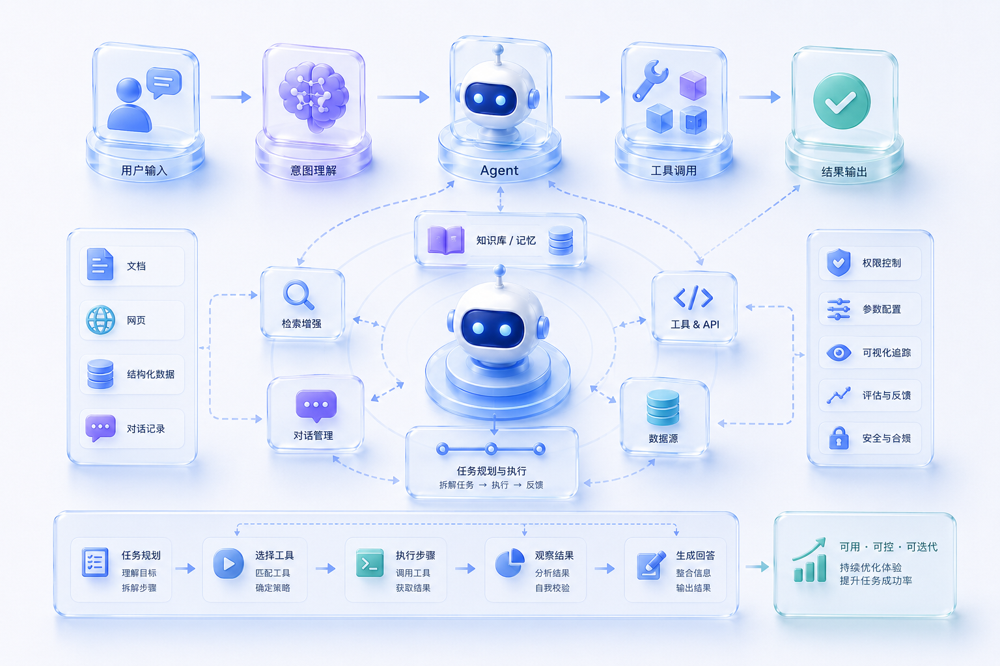

The core challenge of AI products is often not whether the model is powerful enough, but whether users can clearly understand how it works, how to intervene, and how to judge whether the result is trustworthy.
My design focus is to break complex Agent capabilities into a clear product structure: from user input, intent understanding, task planning, and tool calling to execution feedback, result validation, and continuous optimization.
Complete Experience Chain
In the design process, I build a complete experience chain around user goal, system understanding, task execution, and result output.
After the user starts a task, the system needs to identify intent accurately and combine knowledge bases, memory, data sources, and tool APIs to break the task down.
During execution, status feedback, process visualization, parameter configuration, permission control, and exception messaging help users understand what the system is doing, why it is doing it, and when human confirmation is required.
Understandable Agent Collaboration
Agent experience design is not just about making a chat window. More importantly, it establishes an understandable mechanism for intelligent collaboration.
It should let users enjoy the efficiency gains of AI while keeping judgment and control at key decision points.
For example, in the task planning stage, users can see the execution path; in the tool calling stage, users can understand why a tool is being invoked; in the result output stage, users can trace sources, inspect the process, and give feedback or corrections.
Complex Business Scenarios
This kind of design is especially suitable for implementing AI products in complex business scenarios.
For enterprise systems, automation processes, knowledge base Q&A, AI Copilots, or Agent workbenches, the design must handle multiple roles, multiple data sources, multiple task states, and many kinds of exceptions at the same time.
Through clear information architecture and workflow design, the originally black-box execution process of AI can become a product experience that users can perceive, operate, and iterate.
Suitable Scenarios
AI Agent workbenches, intelligent assistants, automation workflows, LLM product experiences, tool calling interfaces, knowledge base Q&A, AI Copilots, enterprise AI platforms, and internal productivity tools.
Deliverables
Product experience architecture, core flow design, Agent workflow design, task status and execution feedback design, Prompt / Tool Calling interaction design, knowledge base and tool calling experience design, prototypes, design specifications, and implementation notes.